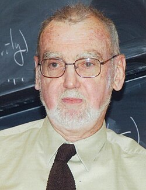

 Langlands in front of chalkboard | |
| Born | October 6, 1936 New Westminster, British Columbia, Canada |
| Education | University of British Columbia (BSc, MSc) Yale University (PhD) |
| Known for | Langlands program |
| Awards | Jeffery–Williams Prize (1980) Cole Prize (1982) Wolf Prize (1995–96) Steele Prize (2005) Nemmers Prize (2006) Shaw Prize (2007) Abel Prize (2018) Order of Canada (2019) |
| Scientific career | |
| Fields | Mathematics |
| Institutions | Princeton University Middle East Technical University University of California, Berkeley Yale University Institute for Advanced Study |
| Thesis | Semi-Groups and Representations of Lie Groups (1960) |
| Cassius Ionescu-Tulcea | |
Doctoral students | James Arthur Thomas Callister Hales Diana Shelstad |
.jpg){kind=link}
Robert Phelan Langlands (/ˈlæŋləndz/; born October 6, 1936) is a Canadian mathematician.[1][2] He is best known as the founder of the Langlands program, a vast web of conjectures and results connecting representation theory and automorphic forms to the study of Galois groups in number theory,[3][4] for which he received the 2018 Abel Prize. He is emeritus professor and occupied Albert Einstein's office at the Institute for Advanced Study in Princeton, until 2020 when he retired.[5]
Early life and career
Langlands was born in New Westminster, British Columbia, Canada, in 1936 to Robert Langlands and Kathleen J Phelan. He has two younger sisters (Mary b. 1938; Sally b. 1941). In 1945, his family moved to White Rock, near the US border, where his parents had a building supply and construction business.[6][3][1]
He graduated from Semiahmoo Secondary School and started enrolling at the University of British Columbia at the age of 16, receiving his undergraduate degree in mathematics in 1957;[7] he continued at UBC to receive a M.Sc. in 1958. He then went to Yale University, where he received a Ph.D. in 1960.[8]
His first academic position was at Princeton University from 1960 to 1967, where he worked as an associate professor.[3] He spent a year in Turkey at METU during 1967–68 in an office next to Cahit Arf's.[9] He was a Miller Research Fellow at the University of California, Berkeley, from 1964 to 1965, then was a professor at Yale University from 1967 to 1972. He was appointed Hermann Weyl Professor at the Institute for Advanced Study in 1972, and became professor emeritus in January 2007.[5]
Research
Langlands's Ph.D. thesis was on the analytical theory of Lie semigroups,[10] but he soon moved into representation theory, adapting the methods of Harish-Chandra to the theory of automorphic forms. His first accomplishment in this field was a formula for the dimension of certain spaces of automorphic forms, in which particular types of Harish-Chandra's discrete series appeared.[11][12]
He next constructed an analytical theory of Eisenstein series for reductive groups of rank greater than one, thus extending work of Hans Maass, Walter Roelcke, and Atle Selberg from the early 1950s for rank one groups such as . This amounted to describing in general terms the continuous spectra of arithmetic quotients, and showing that all automorphic forms arise in terms of cusp forms and the residues of Eisenstein series induced from cusp forms on smaller subgroups. As a first application, he proved the Weil conjecture on Tamagawa numbers for the large class of arbitrary simply connected Chevalley groups defined over the rational numbers. Previously this had been known only in a few isolated cases and for certain classical groups where it could be shown by induction.[13]
As a second application of this work, he was able to show meromorphic continuation for a large class of -functions arising in the theory of automorphic forms, not previously known to have them. These occurred in the constant terms of Eisenstein series, and meromorphicity as well as a weak functional equation were a consequence of functional equations for Eisenstein series. This work led in turn, in the winter of 1966–67, to the now well known conjectures[14] making up what is often called the Langlands program. Very roughly speaking, they propose a huge generalization of previously known examples of reciprocity, including (a) classical class field theory, in which characters of local and arithmetic abelian Galois groups are identified with characters of local multiplicative groups and the idele quotient group, respectively; (b) earlier results of Martin Eichler and Goro Shimura in which the Hasse–Weil zeta functions of arithmetic quotients of the upper half plane are identified with -functions occurring in Hecke's theory of holomorphic automorphic forms. These conjectures were first posed in relatively complete form in a famous letter to Weil,[14] written in January 1967. It was in this letter that he introduced what has since become known as the -group and along with it, the notion of functoriality.
The book by Hervé Jacquet and Langlands on presented a theory of automorphic forms for the general linear group , establishing among other things the Jacquet–Langlands correspondence showing that functoriality was capable of explaining very precisely how automorphic forms for related to those for quaternion algebras. This book applied the adelic trace formula for and quaternion algebras to do this. Subsequently, James Arthur, a student of Langlands while he was at Yale, successfully developed the trace formula for groups of higher rank. This has become a major tool in attacking functoriality in general, and in particular has been applied to demonstrating that the Hasse–Weil zeta functions of certain Shimura varieties are among the -functions arising from automorphic forms.[15]
The functoriality conjecture is far from proven, but a special case (the octahedral Artin conjecture, proved by Langlands[16] and Tunnell[17]) was the starting point of Andrew Wiles's attack on the Taniyama–Shimura conjecture and Fermat's Last Theorem.
In the mid-1980s Langlands turned his attention[18] to physics, particularly the problems of percolation and conformal invariance. In 1995, Langlands started a collaboration with Bill Casselman at the University of British Columbia with the aim of posting nearly all of his writings—including publications, preprints, as well as selected correspondence—on the Internet. The correspondence includes a copy of the original letter to Weil that introduced the -group. In recent years he has turned his attention back to automorphic forms, working in particular on a theme he calls "beyond endoscopy".[19]
Awards and honors
Langlands has received the 1996 Wolf Prize (which he shared with Andrew Wiles),[20] the 2005 AMS Steele Prize, the 1980 Jeffery–Williams Prize, the 1988 NAS Award in Mathematics from the National Academy of Sciences,[21] the 2000 grande médaille de l'Académie des sciences de Paris, the 2006 Nemmers Prize in Mathematics, the 2007 Shaw Prize in Mathematical Sciences (with Richard Taylor) for his work on automorphic forms. In 2018, Langlands was awarded the Abel Prize for "his visionary program connecting representation theory to number theory".[22]
He was elected a Fellow of the Royal Society of Canada in 1972 and a Fellow of the Royal Society in 1981.[23][24] In 2012, he became a fellow of the American Mathematical Society.[25] Langlands was elected as a member of the American Academy of Arts and Sciences in 1990.[26] He was elected as a member of the National Academy of Sciences in 1993[27] and a member of the American Philosophical Society in 2004.[28]
Among other honorary degrees, in 2003, Langlands received a doctorate honoris causa from Université Laval.[29]
In 2019, Langlands was appointed a Companion of the Order of Canada.[30][31]
On January 10, 2020, Langlands was honoured at Semiahmoo Secondary, which installed a mural to celebrate his contributions to mathematics.
Personal life
Langlands has been married to Charlotte Lorraine Cheverie (b 1935) since 1957. They have four children (2 daughters and 2 sons).[3] He holds Canadian and American citizenships.
In addition to his mathematical studies, Langlands likes to learn foreign languages, both for better understanding of foreign publications on his topic and just as a hobby. He speaks English, French, Turkish and German, and reads (but does not speak) Russian.[32]
Publications
- Euler Products, New Haven: Yale University Press, 1967, ISBN 0-300-01395-7
- On the Functional Equations Satisfied by Eisenstein Series, Berlin: Springer, 1976, ISBN 3-540-07872-X
- Base Change for GL(2), Princeton: Princeton University Press, 1980, ISBN 0-691-08272-3
- Automorphic Representations, Shimura Varieties, and Motives. Ein Märchen (PDF), Chelsea Publishing Company, 1979
See also
- Automorphic L-function
- Endoscopic group
- Geometric Langlands correspondence
- Jacquet–Langlands correspondence
- Langlands classification
- Langlands decomposition
- Langlands–Deligne local constant
- Langlands dual
- Langlands group
- Langlands–Shahidi method
- Local Langlands conjectures
- Standard L-function
- Taniyama group
References
- ^ a b Alex Bellos (March 20, 2018). "Abel Prize 2018: Robert Langlands wins for 'unified theory of maths'". The Guardian. Retrieved March 26, 2018.
- ^ "Robert Phelan Langlands". NAS. Retrieved March 26, 2018.
- ^ a b c d Contento, Sandro (March 27, 2015), "The Canadian Who Reinvented Mathematics", Toronto Star
- ^ D Mackenzie (2000) Fermat's Last Theorem's First Cousin, Science 287(5454), 792–793.
- ^ a b Edward Frenkel (2013). "preface". Love and Math: The Heart of Hidden Reality. Basic Books. ISBN 978-0-465-05074-1.
Robert Langlands, the mathematician who currently occupies Albert Einstein's office at the Institute for Advanced Study in Princeton
- ^ "UBC Newsletter: Robert Langlands Interview" (PDF). 2010. Archived from the original (PDF) on April 7, 2014. Retrieved June 22, 2018.
- ^ Kenneth, Chang (March 20, 2018). "Robert P. Langlands Is Awarded the Abel Prize, a Top Math Honor". The New York Times. Retrieved March 20, 2018.
- ^ "Canadian mathematician Robert Langlands wins Abel Prize for 2018". The New Indian Express. March 21, 2018. Retrieved March 26, 2018.
- ^ "Robert Langlands wins Abel Prize 2018 for 'unified theory of maths' | Mathematics Department". math.metu.edu.tr. Retrieved July 26, 2021.
- ^ For context, see the note by Derek Robinson at the IAS site
- ^ "IAS publication paper 14". IAS. Retrieved March 26, 2018.
- ^ R. P. Langlands (January 1963). "The dimension of spaces of automorphic forms". American Journal of Mathematics. 85 (1): 99–125. CiteSeerX 10.1.1.637.9130. doi:10.2307/2373189. JSTOR 2373189. MR 0156362.
- ^ Langlands, Robert P. (1966), "The volume of the fundamental domain for some arithmetical subgroups of Chevalley groups", Algebraic Groups and Discontinuous Subgroups, Proc. Sympos. Pure Math., Providence, R.I.: Amer. Math. Soc., pp. 143–148, MR 0213362
- ^ a b "IAS paper 43". IAS. Retrieved March 26, 2018.
- ^ "IAS paper 60". Institute of Advanced Studies. Retrieved March 26, 2018.
- ^ Langlands, Robert P, Base change for GL(2). Annals of Mathematics Studies, 96. Princeton University Press, Princeton, N.J.; ISBN 0-691-08263-4; MR 574808
- ^ Tunnell, Jerrold, Artin's conjecture for representations of octahedral type, Bulletin of the American Mathematical Society (N.S.) 5 (1981), no. 2, 173–175.
- ^ "IAS publication". Retrieved March 26, 2018.
- ^ "IAS paper 25". IAS. Retrieved March 26, 2018.
- ^ "AMS Notices" (PDF).
- ^ "NAS Award in Mathematics". National Academy of Sciences. Retrieved February 13, 2011.
- ^ "2018: Robert P. Langlands". The Abel Prize. Retrieved July 22, 2022.
- ^ "Search Fellows". Royal Society of Canada. Archived from the original on April 4, 2018. Retrieved April 3, 2018.
- ^ "Robert Langlands". Royal Society. Retrieved April 3, 2018.
- ^ List of Fellows of the American Mathematical Society, retrieved January 27, 2013.
- ^ "Robert Phelan Langlands". American Academy of Arts & Sciences. Retrieved March 22, 2021.
- ^ "Robert Langlands". www.nasonline.org. Retrieved March 22, 2021.
- ^ "APS Member History". search.amphilsoc.org. Retrieved June 14, 2021.
- ^ "Robert Langlands, Université Laval". Archived from the original on June 29, 2016. Retrieved March 1, 2017.
- ^ Office of the Secretary to the Governor General (June 20, 2019). "Governor General Announces 83 New Appointments to the Order of Canada". The Governor General of Canada. Archived from the original on June 28, 2019. Retrieved June 27, 2019.
- ^ Dunlevy, T'Cha (June 27, 2019). "Alanis Obomsawin, 15 other Quebecers to receive Order of Canada". Montreal Gazette. Archived from the original on July 4, 2019. Retrieved July 4, 2019.
- ^ Interview with Robert Langlands, UBC Dept. of Math., 2010; last accessed April 5, 2014.
External links
- O'Connor, John J.; Robertson, Edmund F., "Robert Langlands", MacTutor History of Mathematics Archive, University of St Andrews
- Robert Langlands at the Mathematics Genealogy Project
- The work of Robert Langlands (a nearly complete archive)
- Faculty page at IAS
- Robert Langlands – The Abel Prize interview 2018 on YouTube
- Contenta, Sandro. "The Canadian who reinvented mathematics". Toronto Star. Retrieved March 28, 2015.
- Julia Mueller, On the genesis of Robert P. Langlands' conjectures and his letter to André Weil, Bull. Amer. Math. Soc., January 25, 2018